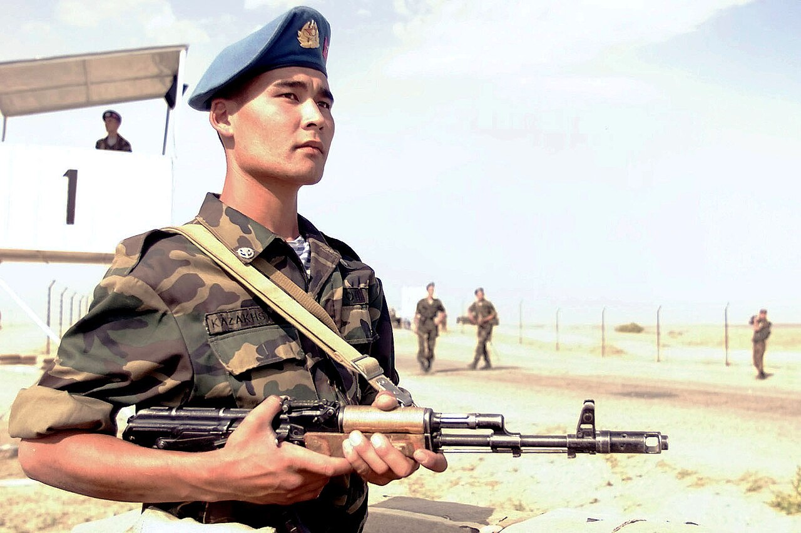

Әскери негіздер · №3 · Киім нысаны Military Basics · No.3 · Uniform Воинские основы · №3 · Форма одежды
Парадтық, күнделікті, далалық — әрқайсысының өз қызметі мен элементтері бар. Parade, everyday and field dress — each has its own purpose and elements. Парадная, повседневная, полевая — у каждой своё назначение и элементы.

Әскери киім нысаны — әскери қызметшілер үшін заңмен және жарғымен белгіленген, айырым белгілері бар біркелкі киім. Ол үш міндетті бір уақытта атқарады: қызметшінің Қарулы күштерге, әскер түрі мен тегіне жататындығын, атағын және лауазымдық санатын көрсетеді. A military uniform is the standardised dress laid down by law and regulations for service members, bearing insignia. It serves three purposes at once: it shows membership of the Armed Forces, the service and branch, and the rank and official category. Военная форма одежды — установленная законом и уставом единообразная одежда военнослужащих со знаками различия. Она выполняет сразу три задачи: показывает принадлежность к ВС, виду и роду войск, а также звание и должностную категорию.
Нысан тек киім емес — ол тәртіптің, ұйымшылдықтың және әскери ұжымға тиесіліктің көрінісі. Оны кию тәртібін «Әскери киім нысанын кию ережесі» айқындайды. A uniform is more than clothing — it is a visible mark of discipline, cohesion and belonging to the military collective. The way it is worn is governed by the Rules for Wearing Military Uniform. Форма — это не просто одежда: это видимый знак дисциплины, сплочённости и принадлежности к воинскому коллективу. Порядок её ношения определяют Правила ношения военной формы одежды.
| Нысан түріDressФорма | Қашан киіледіWhen wornКогда носится | ЕрекшелігіDistinctive featureОсобенность |
|---|---|---|
| ПарадтықParadeПарадная | парадтар, салтанатты іс-шаралар, ант қабылдау, мерекелерparades, ceremonies, taking the oath, holidaysпарады, торжества, принятие присяги, праздники | ең көрнекі, марапаттар тағыладыmost formal, worn with decorationsсамая нарядная, с наградами |
| КүнделіктіEveryday (service)Повседневная | күнделікті қызмет, сабақтар, нарядdaily service, classes, dutyповседневная служба, занятия, наряд | практикалық, бірақ ұқыптыpractical yet neatпрактичная, но опрятная |
| Далалық (камуфляж)Field (camouflage)Полевая (камуфляж) | оқу-жаттығулар, ұрыс, далалық жағдайexercises, combat, field conditionsучения, бой, полевые условия | бүркемелеу түсі, берік матаcamouflage colour, durable fabricмаскирующий цвет, прочная ткань |
Маусым бойынша әр нысан екіге бөлінеді: жазғы (жеңіл мата) және қысқы (жылы астар, бушлат, бас киім құлақшасымен). Ауысу тәртібін гарнизон бойынша бұйрық белгілейді. By season each set is split into summer (light fabric) and winter (warm lining, field jacket, ear-flap headgear). The changeover date is fixed by garrison order. По сезону каждая форма делится на летнюю (лёгкая ткань) и зимнюю (тёплый подклад, бушлат, шапка с клапанами). Дату перехода устанавливает приказ по гарнизону.
Бас киімHead-dressГоловной убор
фуражка, пилотка, берет, қалпақcap, side cap, beret, fur hatфуражка, пилотка, берет, шапка
Китель / күртеTunic / jacketКитель / куртка
үстіңгі киімupper garmentверхняя одежда
ШалбарTrousersБрюки
парадта лампаспен болуы мүмкінmay bear a stripe on paradeна параде — с лампасами
ПогондарShoulder boardsПогоны
атақты көрсетедіshow the rankпоказывают звание
Шеврондар мен нашивкаларChevrons and patchesШевроны и нашивки
бөлімге тиесілікunit membershipпринадлежность к части
Әскер тегі эмблемасыBranch emblemsЭмблемы родов войск
мамандықты білдіредіmark the specialtyобозначают специальность
Бел белдігіWaist beltПоясной ремень
жабдық тағуғаfor carrying kitдля снаряжения
Берцы / етікCombat bootsБерцы / сапоги
аяқ киімfootwearобувь
| БелгіSignЗнак | ОрналасуыWhere wornГде носится | Нені көрсетедіWhat it showsЧто показывает |
|---|---|---|
| ПогондарShoulder boardsПогоны | иықтаon the shouldersна плечах | атақ пен құрамrank and categoryзвание и состав |
| Жең (нарукав) белгілеріSleeve insigniaНарукавные знаки | жеңдеon the sleeveна рукаве | нақты әскери бөлімге тиесілікmembership of a specific unitпринадлежность к конкретной части |
| Берет түсі мен кокардаBeret colour and cap badgeЦвет берета и кокарда | бас киімдеon the headgearна головном уборе | әскер түрі мен тегі (мыс., десантта — қызыл-күрең берет)service and branch (e.g. airborne — maroon beret)вид и род войск (напр., десант — краповый берет) |
| Жаға эмблемаларыCollar emblemsПетличные эмблемы | жағадаon the collarна петлицах | әскери мамандық (артиллерия, байланыс, т.б.)military specialty (artillery, signals, etc.)военная специальность (артиллерия, связь и т.д.) |